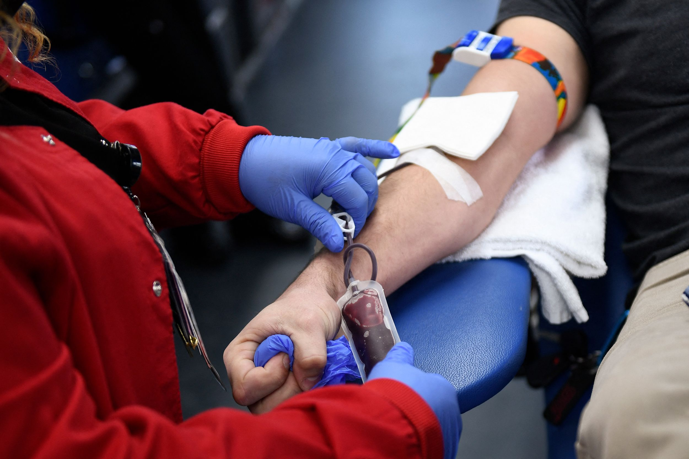

My forte lies in orchestrating comprehensive marketing strategies, encompassing planning, execution, and analysis, to drive sales for both new and existing products and market segments. I excel in fostering brand awareness through strategic promotional endeavors, optimizing resource utilization for maximum impact.
Equally versed in IT solutions, I recognize the pivotal role of data in shaping the future landscape. Inspired by challenges, I am deeply committed to embarking on a data-oriented career journey. My aspiration is to harness the power of data to unlock new insights and drive informed decision-making.
In my pursuit of this transition, I am actively acquiring proficiency in data analysis tools and techniques, including SQL, Python, and data visualization tools. Through practical application and continuous learning, I aim to build a robust portfolio showcasing my expertise in leveraging data for strategic advantage.
Eager to connect with professionals in the data community, I seek to expand my network, exchange insights, and explore opportunities for collaboration and growth. With a firm dedication to staying abreast of industry trends and advancements, I am poised to make meaningful contributions in the dynamic realm of data science and analytics.
Transforming Chaos into Insights, In the realm of data analytics, data wrangling is the art of taming unruly data. It involves Data cleaning, structuring, and preparing raw data for analysis.
Specifically, in SQL, data wrangling encompasses: Data Ingestion, Data Cleaning, Data Transformation, Data Analysis and Data Exporting. SQL is the tool used to handle large complex datasets in most organizations.

DA Bank Loan Analysis, In order to monitor and assess our bank's lending activities and performance for the Year 2021, create a comprehensive Bank Loan Report. This report aims to provide insights into key loan-related metrics and their changes over time.
The report will help The Bank Management make data-driven decisions, track our loan portfolio's health, and identify trends that can inform our lending strategies.

This project involves analyzing sales data from a departmental store using R Programming to uncover trends and insights. Key tasks include data cleaning, manipulation, and visualization to support data-driven decision-making.
The analysis will help identify top-performing products, seasonal patterns, and customer purchasing behaviors.

The Predict Blood Donation project aims to forecast future blood donation trends using historical donation data. Data preprocessing involved cleaning and normalizing donor records to ensure accuracy. Feature engineering was applied to create relevant predictive variables from the raw data. Machine learning models,
including logistic regression and decision trees, were trained and evaluated for their predictive performance. The project concluded with deploying the best-performing model to provide actionable insights for blood donation centers to optimize their inventory management and donor outreach efforts.
This project involves analyzing a COVID-19 dataset using SQL and data analysis skills. The task is to derive insights from the dataset containing information such as geographic location, dates, confirmed cases, deaths, and recoveries.
Detailed tasks are outlined in a reference file with 16 questions for analysis.
Bellabeat Smart Device Case Study is a Capstone Project task of Google Data Analytics Course, provides users with health data related to their activity, sleep, stress, menstrual cycle, and mindfulness habits.
This data can help users better understand their current habits and make healthy decisions.